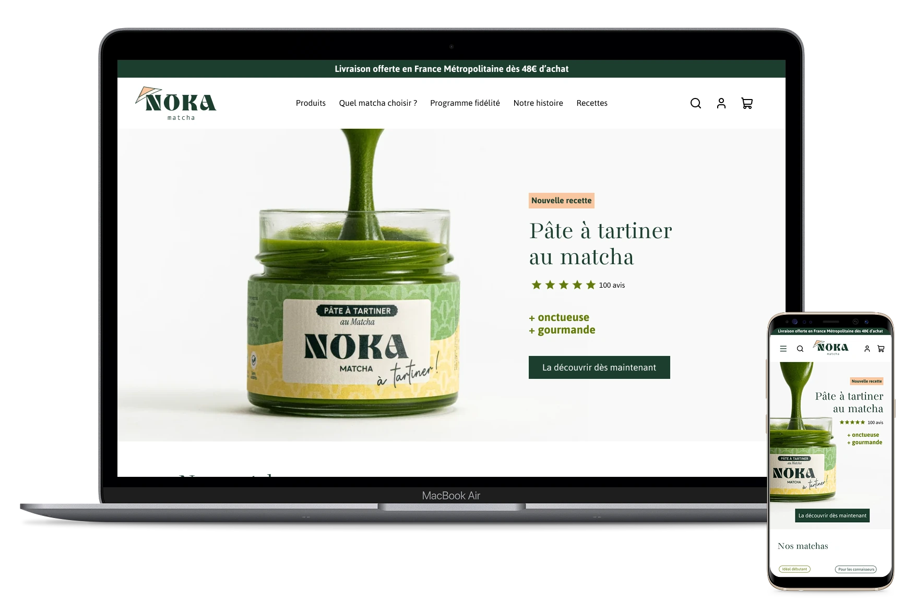
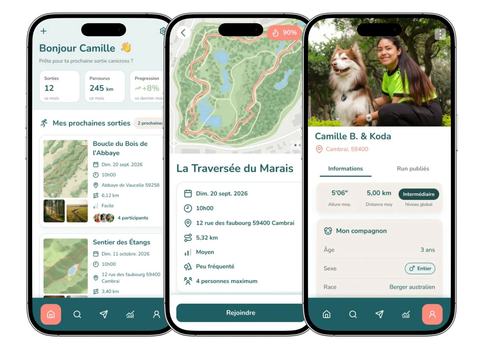
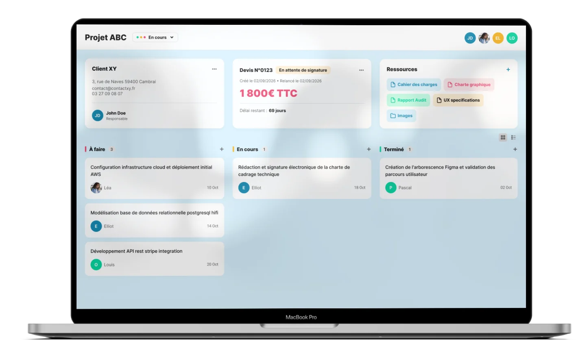
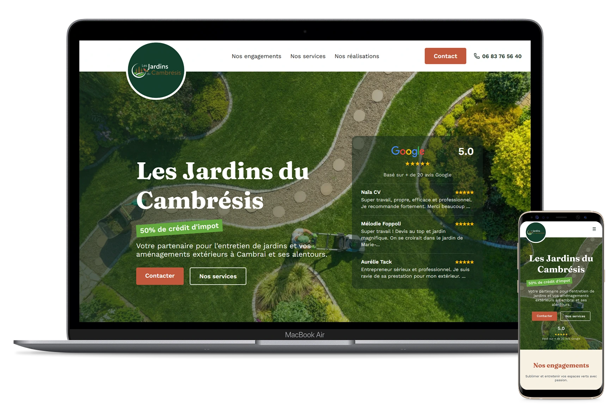
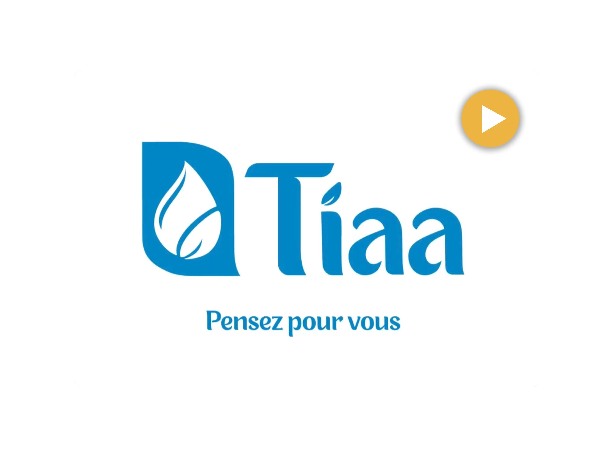
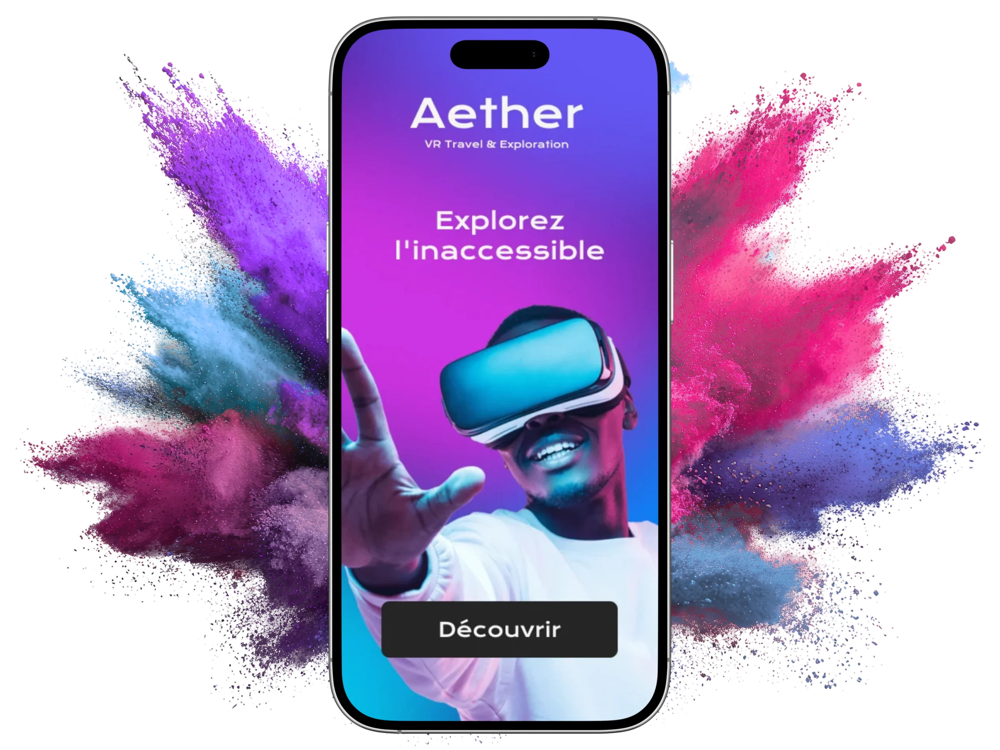

Recherche et tests
Entretiens, observation du terrain et tests d’utilisabilité avec les utilisateurs finaux.
Je suis Pauline Thelliez
Je conçois des applications métier et des sites web que l’on comprend du premier coup : de la recherche utilisateur au design system, puis avec les développeurs jusqu’à la mise en ligne.
01 — Approche
Product Designer depuis 5 ans, je conçois des outils métier (dashboards, back-office), des applications mobiles et des sites e-commerce. Je mène la recherche, structure l’information, construis les design systems et les prototypes, puis j’accompagne l’intégration.
Ma pratique du développement front-end (React, JavaScript, PHP, WordPress, PrestaShop) me permet de proposer des interfaces réalistes à construire et de parler le même langage que les développeurs.
En savoir plus sur mon parcoursEntretiens, observation du terrain et tests d’utilisabilité avec les utilisateurs finaux.
Arborescences, wireframes, user flows, composants et variantes en Atomic Design.
Prototypes interactifs, présentations au client et itérations jusqu’à la validation.
J’intègre moi-même mes interfaces (React, WordPress, PrestaShop) et j’adapte le handoff à la façon de travailler de chaque équipe.
Du design à la mise en ligne, les outils que j’utilise au quotidien.
02 — 5 études de cas

Simplifier l’usage quotidien d’une application métier pour des livreurs.

Alléger la page d’accueil d’une marque de matcha premium et clarifier le choix du produit.

Aider les binômes coureur-chien à trouver des partenaires de course compatibles.

Faire gagner du temps au lancement d’un projet, sans que le chef de projet perde le contrôle.

Concilier l’univers immersif d’une maison de parfum de niche et la rigueur d’un e-commerce.
Simplifier l’usage quotidien d’une application métier pour des livreurs. Refonte avec une navigation en 4 entrées, un design system et 3 itérations de prototype avec le client.
Alléger la page d’accueil d’une marque de matcha premium, clarifier le choix du produit et refléter la personnalité de sa fondatrice. Refonte guidée par un audit.
Aider les binômes coureur-chien à trouver des partenaires de course compatibles. Projet personnel : mon hypothèse de départ est remise en cause, le matching repose sur la complémentarité des chiens, pas sur leur ressemblance.
Faire gagner du temps au lancement d’un projet, sans que le chef de projet perde le contrôle. Projet personnel : un copilote IA prépare le projet à partir du cahier des charges, le chef de projet valide. Le concept a pivoté des templates vers le copilote.

Concilier l’univers immersif d’une maison de parfum de niche et la rigueur d’un e-commerce. Projet fictif conçu et codé de bout en bout : accueil avec flacon 3D et carrousel des fragrances, fiches produits, panier et commande.

UX UI & front-end
Rendre le site vitrine d’un paysagiste visible, lisible et rassurant pour un large public. Refonte en one page avec Astro, sans back-office, avec un SEO et une accessibilité soignés.

Motion design
Donner vie au logo d’une nouvelle marque de santé et d’hygiène pour marquer les esprits dès son lancement. Deux propositions de motion design.

UI design
Rendre la navigation d’une application de voyages en réalité virtuelle intuitive et immersive. UI, micro-interactions et prototype animé dans Figma.